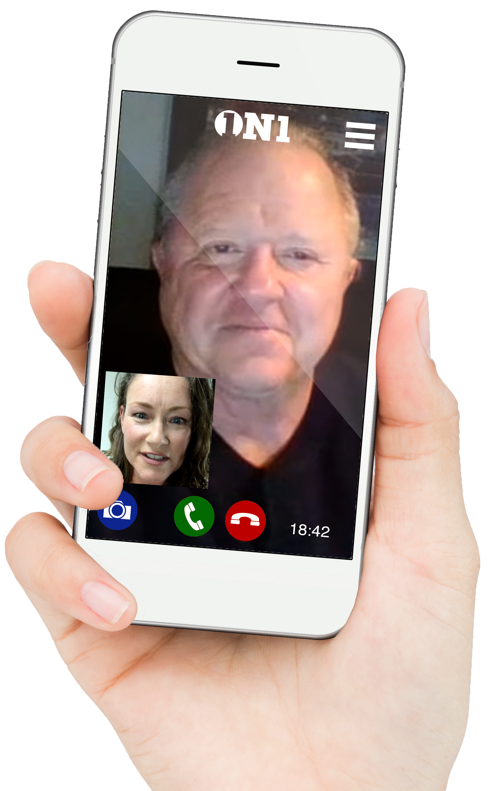
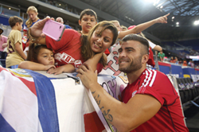
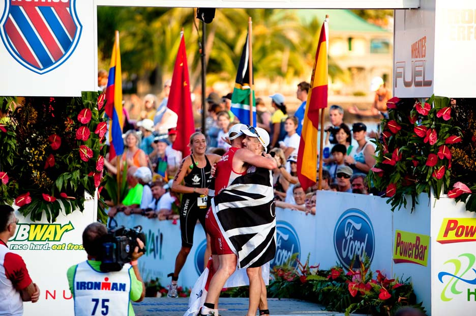

Imagine speaking face-to-face via video chat with your sports idol…
Imagine being an owner of a social media platform targeted at one of the most sought after advertiser
demographics…
Imagine controlling Internet domain names for key business sectors…
Sport is about passion. Passion drives dotSport.
dotSport LLC, a digital media/e-commerce enterprise, based in New York City, provides sports content
across different product lines, to inspire and connect global audiences. The common thread that ties
all three product lines together is sports content across all digital devices monetized by
e-commerce and advertising.
We offer those with sport-focused lives to achieve greater heights. At dotSport, we believe we have built
three genuinely beneficial, sports-focused products:
Incubation Completed! 1ON1 has been recently acquired by a Boston-based investor group.
A timed, interactive video call between a professional athlete and a fan, monetized by e-commerce.
Our primary product enables sports fans to schedule private 20-minute, fee-based, video conversations
centered on their favorite athlete’s self-selected schedule and fee. 1ON1 addresses an unmet need for
fans to be inspired through personal, confidential, face-to-face video chats with admired and respected
sports personalities. Starting with NHL hockey, 1ON1 expects to expand to all sports over time.

A social network for endurance athletes, monetized by advertising and e-commerce.
Represented by more than 100 million participants worldwide (excluding family, fans and other interested
parties) this target market is one of the most sought after advertiser demographics due to endurance
athletes being highly-mobile, tech-savvy with high disposable incomes.
High-value, intuitive ‘life’ websites with contextual content monetized by advertising
dotSport holds trademark on the term ‘life’ for Internet-based social networks relating to sports. The
company is building media sites with a portfolio of high-value ’life’ domain names with the exclusive
registration rights in new top level domains because of its trademark. dotSport owns domains such as
www.life.hockey and www.life.cricket, among 25 others, and intends to form content partnerships with
media companies with domain expertise in these specific areas.
Be inspired. Inspire others.
We believe that athletes inspire people – fans and non-fans alike – as much as fans inspire athletes.
From personal experience, as former premier athletes, we believe that a ‘universal higher purpose’ – the
subtle underlying driver for both athlete and fan to want to engage with one another – is
our foundation.
We believe that fans follow particular sport stars not for the athlete, but rather for themselves;
transference of a winning attitude drives enthusiasm and makes fans winners too.
Motivation
Preliminary 1ON1 fan intercept research done at Miami Heat (NBA) and Florida Panthers (NHL) games
underscore the fact that all sports fans want to speak with their idols. We also learned that an athlete
donating a portion of his/her 1ON1 fee to charity is a distinct persuasive factor that justifies a fan’s
expenditure for 1ON1. Understanding that they can generate hundreds or thousands of dollars virtually
every day for his/her chosen charity simply by speaking with fans during ‘down time’ is more than
gratifying for pro athletes, it is a motivating factor.
Unique Emotional Experiences
We believe that the allure of a unique, emotional experience shared with a favorite professional athlete
is a compelling stimulant to a significant segment of the global population. Capitalizing on fans’
fondest memories we offer unique emotional experiences.
Lowered Risk
Since the addressable market for all three products is predominantly sports fans, enthusiasts and
observers, there are cross-marketing opportunities between our product lines. This diversification of
risk is intended to strengthen investor confidence, i.e. investors are not taking a risk on a one trick
pony, rather on multiple product lines catering to the same market with built-in economies of scale. Our
platforms are created by the same technology group, likewise management, marketing and operations
support are all provided by one cohesive team.
Our Manifesto
We believe in 1ON1’s success because present trends enable the company to amplify social media
through every fan endorsement; effectively enabling 1ON1 to tap into ‘built-in’ viral potential.

To better understand the strategy, consider today’s athlete’s use of social media options from the
perspective of each athlete being capable of alerting his/her entire fan base to their availability on
1ON1. Now, compound those already significant networks with the social networks of each and every fan
who books and completes a 1ON1 with a sports idol. Every completed 1ON1 holds the potential of multiple
tweets, Instagram, or Facebook posts of a fan’s commemorative photo, detailing their joy at the unique
encounter of having spoken directly – exclusively – via video chat with their favorite sports icon.

We belive in Life.Zone’s success because it is the first of its kind social network for
goal-driven athletes that provides them with the ability to post information about their training
strategies, find and meet their peers, share advice, tips, race results, as well as find and trade
specialized equipment. Life.Zone, a dedicated sport social media vertical, is positioned to dominate one
of the most emotional, exciting, and fastest-growing sectors of sport – endurance athletes.
We believe in Premium Life Domains’ success because we are capitalizing on the growing market
for premium domain name based websites and capturing the advertising dollars that flow to them.
Internet Brands, a pioneer in this space, was recently acquired for > US$1 billion.
Our new investors will join current shareholders that include former professional National Hockey League
players; Olympians; experienced product, operations, marketing and financial executives that have proven
track records of successfully financing, launching, commercializing and monetizing
Internet enterprises.